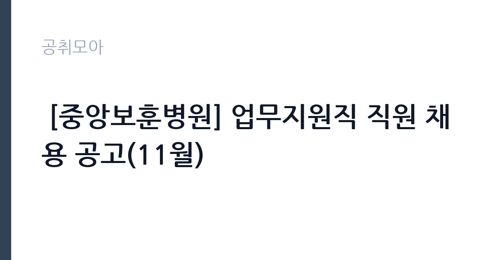

[공공기관] [중앙보훈병원] 업무지원직 직원 채용 공고(11월)
한국보훈복지의료공단 · 서울 · 마감 2026-11-16 (D-14) · 출처 잡알리오

한눈에 보는 모집 조건
| 기관 | 한국보훈복지의료공단 |
|---|---|
| 공고명 | [중앙보훈병원] 업무지원직 직원 채용 공고(11월) |
| 고용형태 | 정규직 |
| 근무지 | 서울 |
| 게시일 | 2026-11-02 |
| 마감일 | 2026-11-16 (D-14) |
지원자격, 이렇게 읽으세요
- 공공기관 채용공시
- 세부 조건은 원문 공고문 확인
정규직 채용은 기간의 정함이 없는 근로계약을 전제로 합니다. 수습 기간을 두고 평가한 뒤 정규직으로 확정하는 절차가 일반적이며 기관의 인사 규정과 임금 체계를 적용받습니다. 이번 공고는 한국보훈복지의료공단이 직접 진행하는 자체 전형입니다. 업무지원직은 모집분야별로 요구 자격이 다르게 제시되므로, 본인이 지원할 분야의 요건을 정확히 확인해야 합니다. 공통 요건으로 연령 기준과 병역 요건, 병원 인사규정상 결격사유가 적용됩니다. 사무 분야는 문서 작성과 엑셀 활용이, 현장 분야는 체력과 안전 수칙 준수가 실질적인 평가 요소입니다. 경력은 증명서로 입증해야 하며, 우대 사항은 증빙이 없으면 반영되지 않습니다. 우대 사항은 증빙이 없으면 반영되지 않으므로 해당 여부를 먼저 확인해야 합니다. 자격증은 유효 기간과 등록 상태를 확인해야 합니다. 갱신이 필요한 자격이라면 갱신 여부를 먼저 점검하십시오. 우대 사항에 해당하면 증빙을 반드시 첨부해야 하며, 누락하면 가점 없이 평가됩니다. 이 공고 원문에 적힌 응시 조건 문구는 '성별, 학력 및 전공: 제한 없음'입니다. 문구를 그대로 읽고 본인 해당 여부를 하나씩 표시해 두면 서류 단계에서 탈락하는 일을 줄일 수 있습니다.
이 공고의 포인트
이 건은 한국보훈복지의료공단이 같은 시기에 낸 6개 모집분야 가운데 업무지원직 직무입니다. 다른 직무 공고와 요건이 다르므로 지원 전에 모집분야 표를 대조해야 합니다. 이 공고의 첫 번째 포인트는 고용 형태입니다. 수습 기간 평가를 통과하면 기간의 정함이 없는 신분이 되어 고용이 안정됩니다. 두 번째는 업무 범위가 명확하다는 점입니다. 업무지원직 직무로 채용되므로 배치 이후 담당 업무가 크게 흔들리지 않습니다. 세 번째는 근무지입니다. 서울 지역 근무로 접근성은 좋지만 그만큼 지원자가 몰리는 지역이므로 경쟁률을 넉넉히 잡아야 합니다. 지역 기반 채용이라 거주지와 통근 가능성이 실질적인 판단 기준이 됩니다. 선발 인원은 공고문에 명시되어 있으니 모집분야 항목을 함께 확인하십시오.
전형은 어떻게 진행되나
서류전형과 면접전형 외에 직무수행능력 평가가 붙는 경우가 있습니다. 평가 방식은 공고문에 구체적으로 적혀 있으므로 어떤 항목에 배점이 높은지 먼저 파악하십시오. 면접에서는 지원 동기보다 실제 업무 경험에 대한 질문이 많고, 답변의 구체성이 평가를 가릅니다. 전형 일정은 서류 마감 이후 빠르게 진행되므로 연락 가능한 번호를 정확히 기재하고 문자와 메일을 수시로 확인해야 합니다. 최종 단계에서는 결격사유 조회와 신체검사가 진행됩니다. 제출서류 원본은 최종 단계에서 다시 요구되는 경우가 있어 사본과 함께 보관하십시오.
원문에서 확인한 전형 방식
[공통 자격요건] - 인사규정 제18조에 정한 결격사유에 해당하지 않는 자 - 성별, 학력 및 전공: 제한 없음 ※ 단, 공고마감일 기준 정년(60세, 청소의 경우 65세)에 도달한 자는 지원 불가 ※ 자세한 내용은 채용공고문 확인
이런 분께 추천해요
- 지원 분야의 요건을 충족하는 분
- 사무와 현장 업무를 함께 수행할 수 있는 분
- 부서 배치와 교대 근무를 수용할 수 있는 분
지원 전 체크리스트
- 응시자격 요건과 경력 기준을 충족하는가 — 경력은 증명서로 입증해야 합니다
- 수습 기간과 정규직 전환 조건을 확인했는가
- 제출서류 목록을 모두 준비했는가 — 누락 시 서류 단계에서 탈락합니다
- 접수 마감 2026-11-16 이전에 접수 방식을 확인해 제출했는가
모집 일정과 제출 타이밍
접수 마감은 2026-11-16이고 공고는 2026-11-02에 게시되었습니다. 준비 기간 14일 안에 서류 작성, 증빙 발급, 접수를 모두 마쳐야 하므로 주말을 포함해 일정을 미리 나누는 것이 좋습니다. 특히 경력 기술서나 직무수행계획서를 요구하는 공고는 작성에 시간이 걸리므로 첫날 초안을 잡으십시오. 서류 합격자 발표와 면접 사이 간격이 짧은 경우가 많아 면접 예상 질문은 서류 제출 전에 정리해 두는 편이 유리합니다. 마감 직전에는 접속이 몰리므로 여유를 두고 제출하십시오. 제출 서류는 공고문에 적힌 순서대로 정리하면 담당자가 확인하기 쉬워 누락이 줄어듭니다.
직무 이해하기: 공공기관
한국보훈복지의료공단은 국가유공자와 보훈대상자의 진료와 복지를 담당하는 공공기관으로, 전국에 보훈병원과 보훈요양원을 운영합니다. 병원은 진료과와 검사실, 재활·요양 부서로 나뉘고 의료기술직·기능직·업무지원직이 함께 근무합니다. 국가유공자 진료라는 기관 성격상 의료 정보와 개인정보 보호 요건이 엄격하고, 교대·당직 근무가 포함되는 자리가 많습니다. 업무지원직은 병원의 진료 지원과 시설 운영을 뒷받침하는 실무 직군입니다. 부서에 배치되어 문서 정리와 자료 입력, 물품 관리, 검사실·진료과 지원 업무를 맡습니다. 환자 이송이나 검체 운반처럼 현장 이동이 필요한 업무가 포함되기도 하고, 원무·보험 업무를 보조하는 경우도 있습니다. 배치 부서에 따라 사무 비중과 현장 비중이 크게 달라지므로 면접에서 희망 분야를 밝히는 것이 좋습니다. 병원 운영 시간에 맞춰 근무하고, 부서에 따라 교대가 적용됩니다. 실무는 선임자와 짝을 이뤄 익히는 방식이 일반적이라 첫 달은 교육과 현장 적응에 쓰입니다. 업무 강도와 근무 시간대는 부서 배치에 따라 달라지므로 면접에서 확인하는 것이 가장 정확합니다.
자기소개서 작성 팁
지원서는 지원 분야를 첫 문단에서 분명히 밝히고 그 분야에 맞는 경험을 앞세우는 것이 효과적입니다. 사무 지원이라면 문서·데이터 처리 경험을, 현장 지원이라면 시설·이송 업무 경험을 중심에 두십시오. 반복 업무를 정리해 효율을 높인 사례가 있다면 강한 소재입니다. 병원 근무 경험이 있다면 위생과 개인정보 보호 측면을 함께 언급하십시오. 직무 경험이 많지 않다면 경험의 양보다 과정을 구체적으로 쓰는 편이 낫습니다. 어떤 상황에서 무엇을 판단했고 어떤 결과가 나왔는지 순서대로 서술하면 신뢰가 생깁니다. 지원 동기와 기여 방안은 한 문단씩 짧게 유지하고, 가장 자신 있는 경험에 분량을 몰아주십시오. 마지막 문장은 포부보다 구체적인 실행 계획으로 끝내는 것이 좋습니다.
면접 준비 포인트
면접에서는 지원 분야에 대한 이해와 업무 처리 방식을 확인합니다. 여러 직무 중 왜 해당 분야를 선택했는지, 마감이 겹칠 때 어떤 순서로 처리할지 묻습니다. 배치 변경이 가능한지에 대한 질문도 나오므로 솔직하게 답하십시오. 이전 근무지에서 맡았던 업무 범위와 규모를 구체적으로 설명하면 신뢰를 얻습니다. 마지막 질문 시간에는 근무 조건에 대한 확인 사항을 한 가지 정도 준비해 가면 성실성이 드러납니다. 답변 시간이 짧게 정해져 있는 경우가 있으므로 핵심 문장을 먼저 말하고 근거를 붙이는 방식이 유리합니다.
급여·근무조건 읽는 법
알리오(공공기관 경영정보 공개시스템) 2025년 결산 경영공시 기준으로 한국보훈복지의료공단 일반정규직 1인당 평균보수액은 7,172만원, 공시된 신입사원 초임은 4,170만원입니다. 평균보수액은 기본급에 고정수당·실적수당·성과상여금·급여성 복리후생비를 모두 합산한 값이라 월 기본급만 보고 판단하면 실제와 크게 어긋납니다. 정규직 신입의 경우 공시된 신입사원 초임이 출발점이 되고, 이후 호봉과 성과급에 따라 평균보수에 접근합니다. 업무지원직의 보수는 병원 인사규정의 직급별 임금표와 채용 형태에 따라 정해집니다. 무기계약으로 채용되면 정년까지 근무가 가능하고 매년 임금이 조정되며, 계약직이면 계약 기간이 함께 명시됩니다. 수당과 상여 항목이 공고문 처우표에 제시되므로 항목별로 확인해야 실제 총액을 알 수 있습니다. 2026년 적용 최저임금은 시급 10,320원, 월 환산 2,156,880원(주 40시간·209시간 기준)입니다. 고용노동부 고시 제2025-47호로 확정된 금액입니다. 공고문에 금액이 제시되지 않은 항목은 원문 보수표나 처우 설명에서 확인해야 하며 확인되지 않은 수치는 쓰지 않는 것이 원칙입니다. 비교할 때는 월 급여뿐 아니라 상여·명절휴가비·복지포인트·초과근무수당까지 포함한 연간 총액으로 계산하십시오. 기간제라면 계약 기간 동안의 총액을, 무기계약이라면 호봉 상승과 정년까지의 누적 소득을 기준으로 판단하는 편이 정확합니다.
자주 묻는 질문
- 선발 인원은 몇 명인가요?
공고문의 모집분야 항목에 직종별 인원이 표로 제시되어 있습니다. 첨부된 공고문 원문에서 확인하십시오. - 근무지는 어디인가요?
서울 지역의 한국보훈복지의료공단 소속 근무지입니다. 세부 주소와 출퇴근 조건은 원문 공고문에서 확인할 수 있습니다. - 보수는 얼마인가요?
채용 신분(정규직)과 기관 임금 규정에 따라 정해지며 구체적인 금액은 공고문 처우 항목에 제시됩니다. 금액이 공개되지 않은 경우에는 원문의 보수표를 확인하십시오.
함께 보면 좋은 공고
[공공기관] 2026년 한국특허정보원 체험형 청년인턴 채용 — 마감 2026-11-18[공공기관] 한국폴리텍대학 진주캠퍼스 행정지원직(사무직원 휴직 대체인력) 채용 공고 — 마감 2026-11-10[공공기관] 대구경북첨단의료산업진흥재단 2026년 3차 정원외 계약직원 채용공 — 마감 2026-11-17출처: 잡알리오 공개정보를 바탕으로 공취모아가 정리한 안내글입니다. 모집 조건·일정은 변경될 수 있으니 지원 전 반드시 원문 공고문을 확인하세요. 본 글은 정보 제공용이며 합격을 보장하지 않습니다.